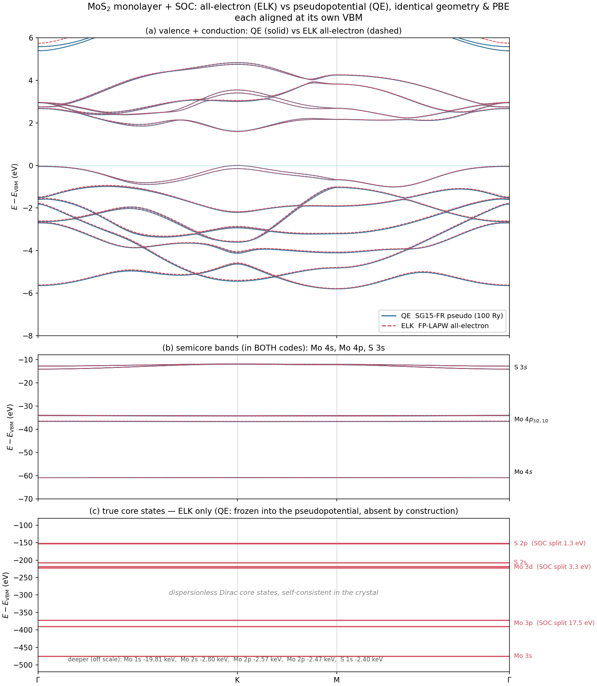
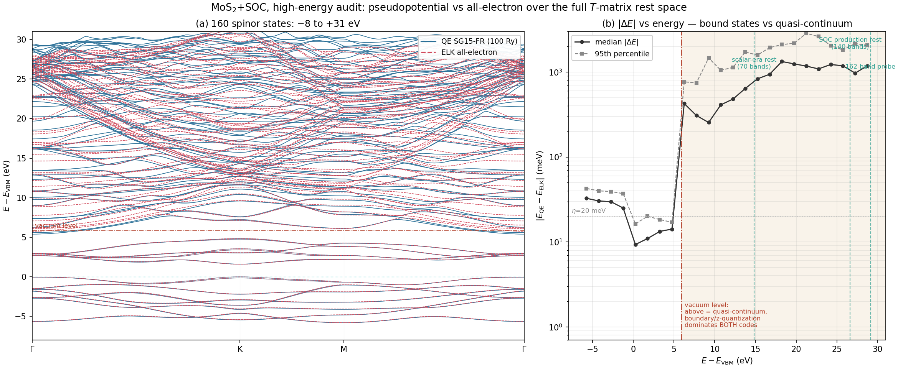

1 · What this column arbitrates, and why ELK
The pseudopotential campaigns validated basis effects exhaustively (push-up artifacts, A1/PAW cures, the FR-$\chi$ question), always within the pseudopotential framework: the supercell truth is itself SG15-PBE. What no gate had touched is the pseudization itself — the frozen, Dirac-solved-then-discarded core and the reshaped valence potential. The NC vs PAW agreement (3–10 meV on golden cases) is reassuring but not conclusive: both inherit the same frozen-core construction.
Among the free all-electron (L)APW codes — ELK, exciting, FLEUR, all reference-grade in the community's reproducibility benchmarks — ELK was chosen for this first rung for its one-hour build (single makefile, ifx + threaded MKL + MKL FFT on Banff) and complete SOC support. Its known ceiling — no distributed eigensolver, no 2D Coulomb cutoff — is handled below: the former by keeping to primitive cells (a 3×3 defect rung fits ELK; the 6×6 rung would go to FLEUR, whose film mode is also the proper all-electron analogue of QE's 2D cutoff), the latter by a control calculation that turns the missing cutoff from a caveat into a measured zero.
2 · Setup: identical physics in, one approximation out
Geometry is bit-inherited from the QE production cell ($a$ = supercell/6 = 6.0191115837 bohr, $c$ = 24 Å, S at $z=\pm0.0651240739$, converted with QE's own Bohr constant), PBE, spinorb, the same 12×12×1 grid, rgkmax = 8. The valence partitions match exactly — which makes the band-by-band comparison meaningful:
| ELK core (self-consistent Dirac) | ELK valence bands | QE SG15 valence | |
|---|---|---|---|
| Mo | 1s…3d = 28 e$^-$ | 4s$^2$4p$^6$4d$^5$5s$^1$ = 14 e$^-$ | $z_{\rm val}$ = 14 ✓ |
| S | 1s2s2p = 10 e$^-$ | 3s$^2$3p$^4$ = 6 e$^-$ | $z_{\rm val}$ = 6 ✓ |
26 spinor valence states per cell in both codes (verified from the ELK occupancies), state-for-state comparable. The only difference left standing is the one under test: QE's cores are frozen into the pseudopotential; ELK's relax in the crystal every SCF cycle.
3 · The K-point scorecard — and the near-cancellation probe
| @K | QE (SG15-FR, 100 Ry) | ELK (all-electron) | Δ |
|---|---|---|---|
| valence SOC splitting | 149.0 meV | 147.2 meV | 1.8 meV (1.2%) |
| conduction SOC splitting | 3.0 meV | 3.1 meV | 0.1 meV |
| direct gap @K | 1.6041 eV | 1.5907 eV | 13 meV (0.8%) |
The conduction row is the loaded one. MoS$_2$'s famously tiny conduction splitting at K is a near-cancellation between Mo-$d$ contributions of opposite sign — the most core-region-sensitive observable this system offers, since SOC matrix elements weight exactly the region a pseudopotential reshapes. Agreement to 0.1 meV on a cancellation residue is about as strong a statement of FR-pseudo SOC fidelity as can be extracted from one material. Cost of the entire SCF: 54 s on one node — this rung of the ladder is effectively free.
Boundary-condition control. ELK has no 2D Coulomb truncation (verified at the source level: none among its 323 input options), while the QE production used assume_isolated='2D'. Rather than argue the difference away, it was measured: the same QE cell rerun without the cutoff reproduces all three numbers to the printed 0.1 meV / 0.1 meV / 0.05 meV — for this nonpolar, mirror-symmetric monolayer at 24 Å vacuum, the periodic-image contribution is zero at benchmark resolution. The 13 meV gap difference is therefore genuinely frozen-core + pseudization (plus residual LAPW basis convergence), not electrostatics.
4 · Band structures, with the core states shown

Quantitatively: over the twenty bands nearest the gap (12 occupied + 8 empty), the largest deviation anywhere on the path is 42 meV (upper conduction bands; band-edge physics agrees an order of magnitude better, per the K-point table). The semicore tier — the classic stress test of pseudization, 13 to 61 eV below the VBM — lands remarkably close:
| semicore band (rel. VBM) | QE | ELK | Δ |
|---|---|---|---|
| S 3s ($-12.7$ eV) | $-12.65$ | $-12.65$ | 4 meV |
| Mo 4p ($-35$ eV, SOC doublet) | $-35.04$ | $-34.97$ | 68 meV |
| Mo 4s ($-61$ eV) | $-60.86$ | $-60.87$ | 10 meV |
5 · The high-energy audit: a step at the vacuum level, not a decay
The $T$-matrix rest space reaches high — 140 bands in the SOC production, spanning to $\sim$+27 eV above the VBM at the primitive level — and none of those upper states had ever been compared against anything outside the pseudopotential framework. Extending both codes to 160 spinor states (QE rerun with nbnd = 172, top twelve discarded; ELK's task-20 output already reached +31 eV) makes the audit possible over the entire range the downfolding actually uses.

| window | median $|\Delta E|$ | 95th pct | character |
|---|---|---|---|
| valence ($-8$…0 eV) | 29 meV | 40 meV | bound, layer-localized |
| conduction below vacuum (0…+5.9 eV) | 13.5 meV | 354 meV (near-vacuum tail) | bound, layer-localized |
| above the vacuum level (+5.9…+31 eV) | $\sim$0.9 eV | $\sim$2 eV | quasi-continuum |
Reading the step honestly. Above the vacuum level a slab calculation's spectrum is a discretized continuum, and its state-by-state energies are set by things that legitimately differ between the two codes: the vacuum boundary condition (QE's 2D Coulomb cutoff vs ELK's 3D periodic images — the control of §3 certified bound states only, and indeed the step turns on exactly where bound ends), the $z$-quantization of the 24 Å vacuum, and, on the ELK side, LAPW linearization drifting far from the valence energies. None of the $\sim$1 eV quasi-continuum spread can be attributed to pseudization specifically; the honest statement is that state-by-state comparison stops being meaningful there for reasons shared by any slab code pair.
What this means for the $T$-matrix rest space. The bound part of the rest space — everything a localized $\Delta V$ couples to strongly — agrees between pseudopotential and all-electron at the 10–30 meV level all the way up. The quasi-continuum part enters the downfolding only through weak couplings (layer-localized $\Delta V$ against $z$-delocalized states) and large denominators, which is consistent with what the campaigns measured internally all along: band-boosting the rest space from 70 to 160 bands moved converged levels by only tens of meV. The high-energy audit closes with the right conclusion for each region — endorsement where the states are physical, and a documented reason not to over-interpret where they are not.
6 · Bottom line, and the remaining rungs
Artifacts: ELK build ~/software/elk/elk-11.0.2 (make.inc for ifx+MKL+MKL-FFT); benchmark inputs/outputs ~/elk_bench/mos2_prim (SCF + task-20 bands + EVALCORE.OUT), QE controls ~/elk_bench/qe_no2d, ~/elk_bench/qe_bands (isolated outdir — production data untouched); extraction extract_k.py, figure post/plot_elk_qe_bands.py. QE reference numbers from the campaign's bands144.npz.